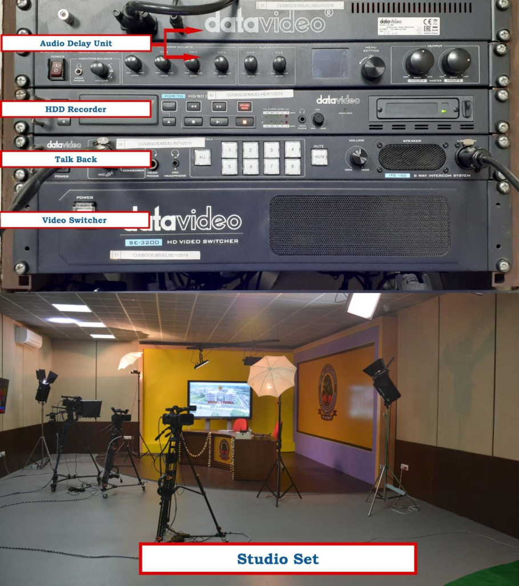
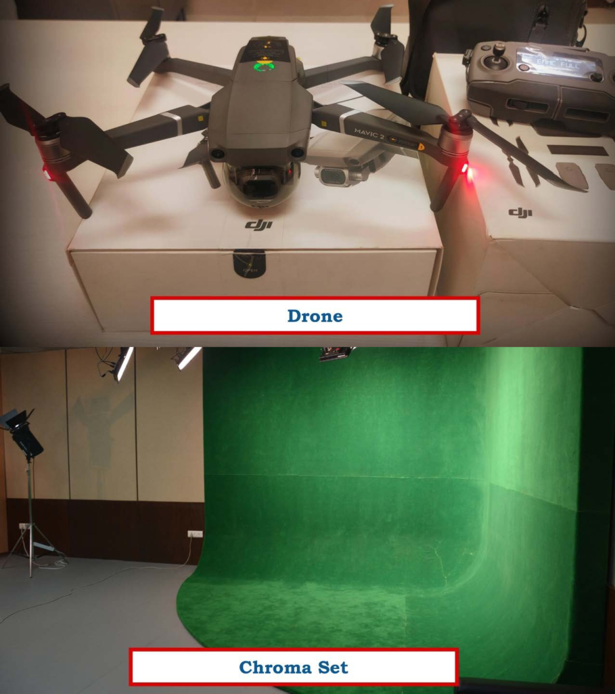
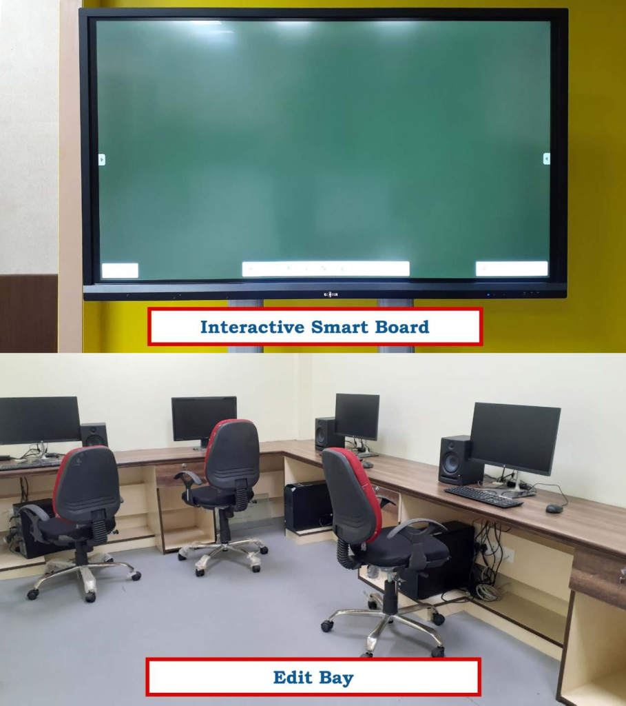
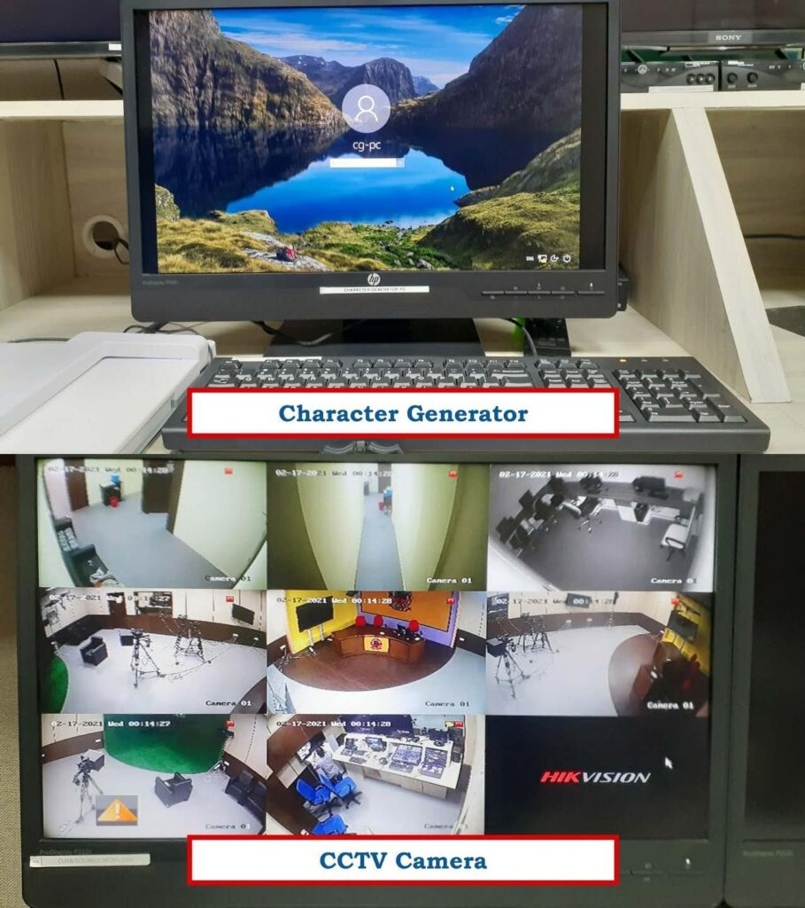
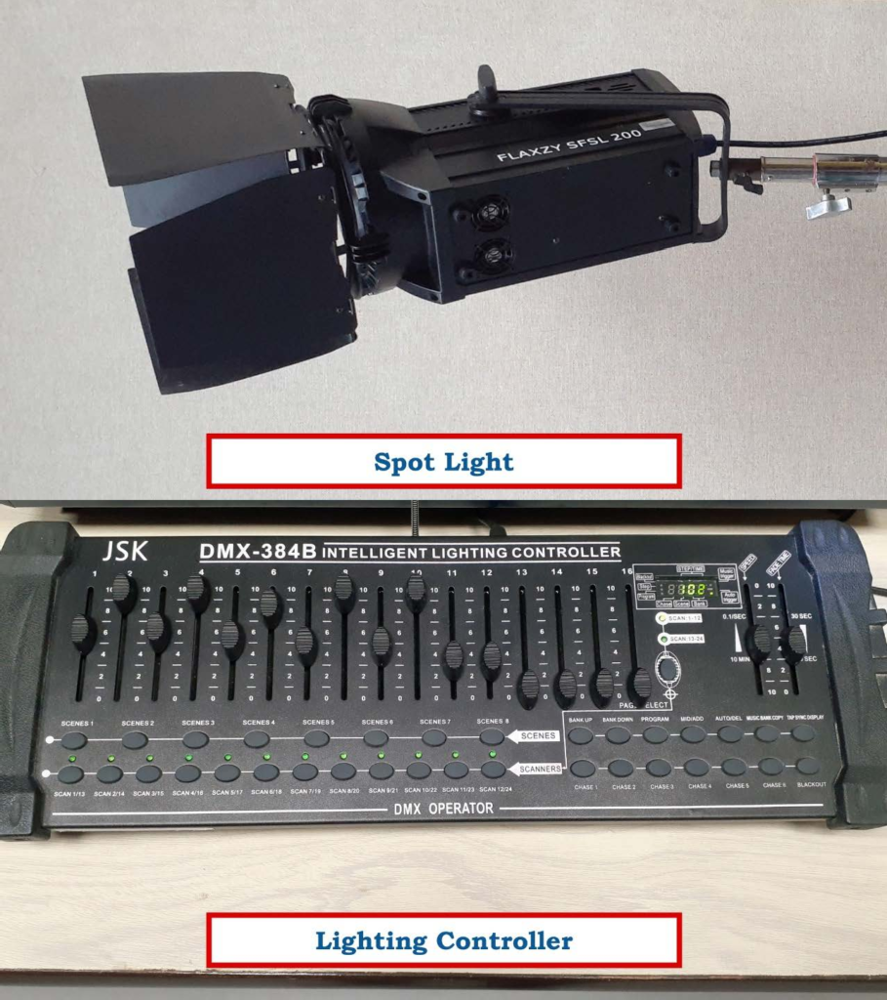
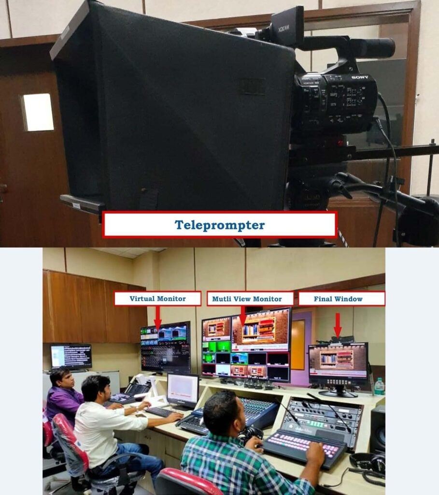
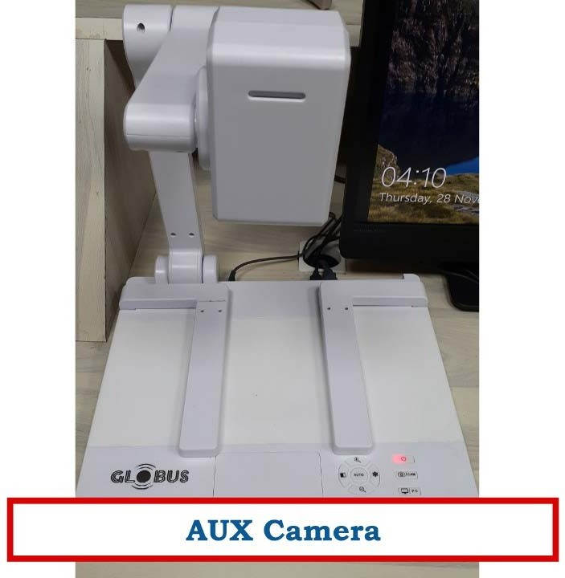
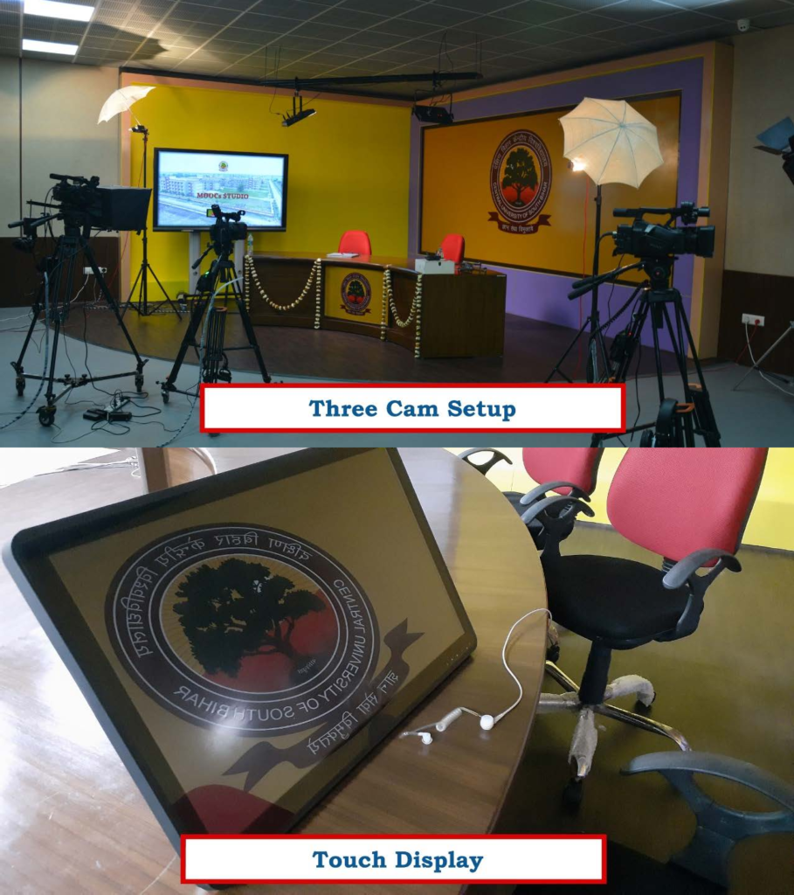

Media Studio & MOOCs Production Lab
CUSB’s soundproof electronic media production facility, built for professional multi-camera video recording, high-definition live streaming, interactive e-content, and MOOCs digital learning.
The Department of Media and Mass Communication operates a state-of-the-art soundproof electronic media production lab equipped with Sony 4K professional studio video cameras, audio mixing console, multi-channel video switcher, talkback system, virtual chroma set, real physical sets, and Apple Mac-Pro editing suites loaded with industry-standard post-production software.
The studio features three multi-camera setups with motorized teleprompters, digital audio delay units, live-streaming broadcast encoders, and five dedicated non-linear editing (NLE) and graphics suites supporting Swayam, MOOCs course creation, news bulletins, and documentary production.








Every hardware and software component in the Media Department fulfills a vital function in turning academic lectures and creative scripts into broadcast-quality educational assets.
Plan & Script
Develop e-learning modules, teleprompter scripts, and storyboards with interactive touch boards and faculty guidance.
Record in 4K
Capture high-definition multi-angle video across chroma key and physical stages with motorized teleprompters and dimmable lighting.
Post-Produce
Mix multi-track audio, generate dynamic title graphics, color grade, and composite virtual sets in Mac-Pro editing suites.
Broadcast & MOOCs
Deploy finalized lessons directly to Swayam, YouTube, institutional portals, and live webinars with low latency.